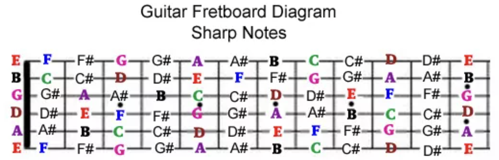

探索聲波原理與吉他半音階構造的實作應用
分類項目：音樂物理與基本功
教學核心：音樂三大組成、12 平均律、頻率概念與聲波物理
實作重點：理解吉他作為半音階樂器的構造與指板推算
不同高低（頻率）的音符在時間軸上的單音連續排列，為音樂的主唱與線條。
兩個或以上不同音高的聲音同時響起，創造出立體感、緊張度與解決感。
聲音與靜默在時間上的組織與長短長度（脈動），為音樂的骨幹與心跳。
吉他的角色：吉他同時兼具「和聲（和弦伴奏）」、「旋律（獨奏 Solo）」與「節奏（刷奏/打擊音）」三者，是極為全面的和聲樂器。
音名： C, C#(Db), D, D#(Eb), E, F, F#(Gb), G, G#(Ab), A(440Hz), A#(Bb), B
唱名與黑鍵唱名：
• 唱名：Do, Re, Mi, Fa, Sol, La, Ti, Do
• 黑鍵唱名 (去母音 + i)：Di, Ri, Fi, Si, Li
PS: 頻率 = 1 sec 中震動的次數；單位 : Hz

使用電子調音器將六條空弦校正至標準音 E2, A2, D3, G3, B3, E4，體會調音釘張力對頻率變化的影響。
在第 6 弦 (E) 上，依序按壓 0格(E) ➔ 1格(F) ➔ 3格(G) ➔ 5格(A)，驗證「全音相隔兩格、半音相隔一格」。
本週課後作業：
1. 熟記六條空弦音名 E - A - D - G - B - E。
2. 在第 6 弦與第 5 弦上，練習從 0 格一格一格往上數出所有的 12 個半音。